SAGANO BLOG
- >
- SAGANO BLOG
- >
- 国際交流
2024年05月02日
4月24日(水)韓国のコクソン高校の生徒と本校の国際交流委員26名がオンラインミーティングで交流しました。今年度、コクソン高校との交流は4年目を迎えました。今年度は４回のオンライン交流を予定しています。参加生徒たちが初回の様子をまとめてくれました。
『自己紹介をしたり好きな食べ物や音楽、アニメなどを英語を使って話し合いました。最初はお互い緊張していた感じがあったけれど、話をしていくうちにだんだん緊張も解け、短時間でも、仲が深まっていくように感じました。』
『質問したい事があっても英語での質問の仕方がわからず、聞けなかったこともあったので、英語表現の引き出しを増やしていきたいです。』
『コクソン高校の方が明るく話してくれたおかげでとても楽しく会話をすることができました。発音に自信がなくても黙らず、恥ずかしがらずに笑顔で話すこと・チャレンジをすることが大切だと思いました。』
『互いの国の文化が双方の国ですごく人気があるということを改めて知りました。すずめの戸締まりやジブリアニメ、邦楽やハイキューなどの日本文化が韓国でも人気があるということに少し誇りを持てました。』
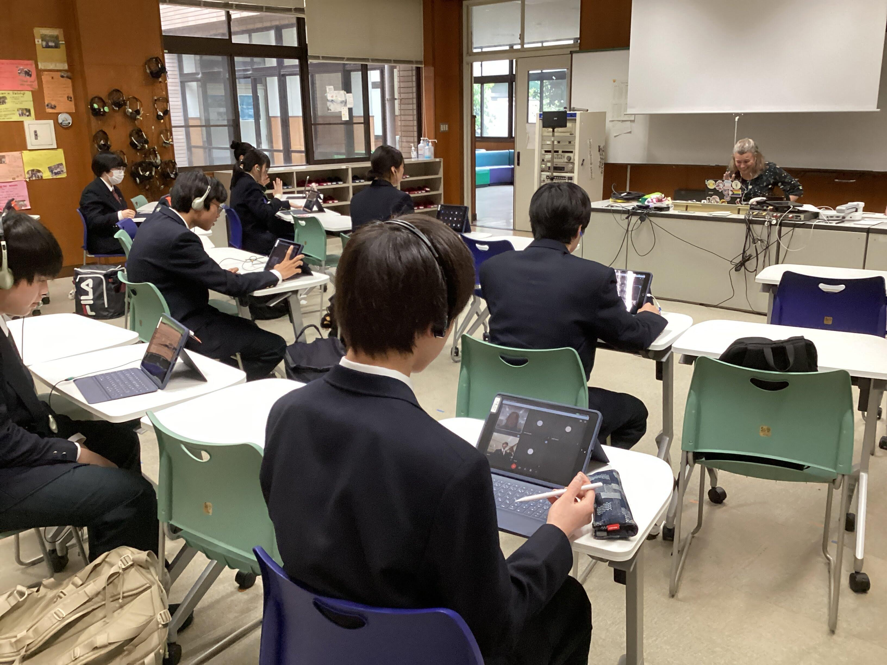 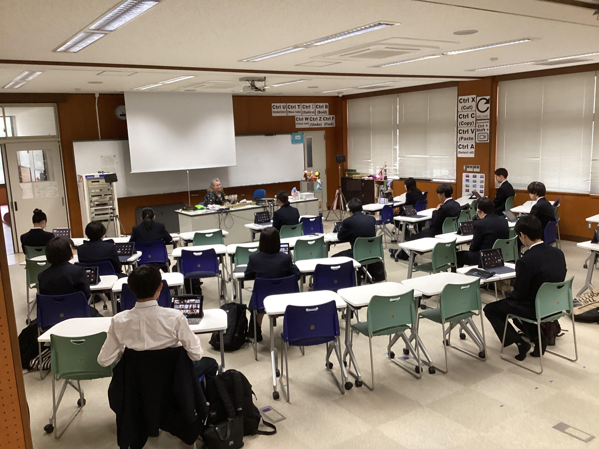
『交流を通して、自分が知らなかったキンパなどの韓国の料理に出会うことができました。また、今度それらの料理について調べ、実際に作ってみようと思っています。』
英語でまとめてくれた生徒もいました。
『 What was interesting to me was that the Korean students could speak a little Japanese. I was fascinated by their knowledge and tried to speak the Korean I knew. Through this exchange, I learned that the most important thing is to listen to what they say with interest.』
2024年04月10日
Last school year, 8 students from Sagano High School traveled to Florida in January. Sagano High School and Jupiter High School have had an exchange program since 2015. From 2021 to 2023, it was impossible to travel to Florida, but we maintained our relationship online. Finally, this January, we could return to Florida for our 2-week exchange program on environmental and cultural studies. After returning to Japan, the participants began to formulate their ideas for a presentation on what they experienced, what they learned, and what ideas they wished they could see used here in Japan and in Kyoto. Here is a description of the full Florida exchange program for 2024!
2024年1月4日から17日までの2週間本校生徒が米国フロリダ州にあるジュピター高校を訪問する短期研修を実施しました。ジュピター高校環境学コースの皆さんとは嵯峨野高校の連携校として2015年から交流事業を実施しています。2021年から2023年の期間はコロナ禍により対面による交流はできませんでしたが、オンラインで関係を維持してきました。コロナが5類扱いとなり、ある程度海外への往来ができるようになり、対面による交流を再開することができました。
この2週間の研修で、生徒たちは同コースの生徒の家にホームステイし、ジュピター高校の授業の受講やフィールドワーク等の経験を通して、英語でのコミュニケーション能力の向上はもちろんのこと、異文化と環境学についての理解を深め、批判的・論理的思考力、判断力そして共感力を養うことができました。日本に帰国後、参加者は自分たちが体験したことや学んだことを振り返り、環境問題に関する自らの行動変容を京大環境学堂の皆さんに発表しました。
【写真】参加した高校2年生8名とマイアミ総領事館広報文化担当官（上段右端）
ジュピター高校環境学コース理科教員（上段左端）及び嵯峨野高校引率教員（下段）
以下、研修内容について詳しく報告します。
Pre-Trip Preparations - 出発前の結団式
Before leaving, the students met with the principal, who encouraged them to learn as much as possible and to investigate many research questions.
出発前の結団式では、研修で様々なことに挑戦する決意を代表生徒が表明し、校長先生からは、各自が設定した問いについての自分なりの答えを見つけるべく多くを学んでくるように励ましの言葉がありました。
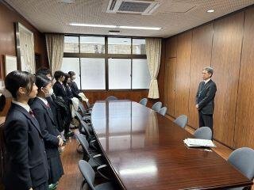
Arrival and Initial Days - 1月4日～7日
January 4th-7th: On January 4th, the students were warmly received by their homestay families at the airport. The following days were spent enjoying free days with their homestay families, acclimating to the environment. We also met up together at the Jupiter Lighthouse, a symbol of the town of Jupiter, to learn about the history of the town.
約16時間のフライトの後フロリダ州ウエストパームビーチ空港に到着した生徒たちは、ホストファミリーに温かく迎えられました。最初の週末を一緒に過ごしながら、時差ぼけを克服して体調を整え、現地の気候や環境に慣れました。希望者には、ジュピターの町の象徴であるジュピター灯台で町の歴史について学ぶ機会もありました。
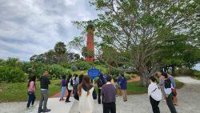
Educational Activities and Experiences 研修内容
January 8th: The group visited the Morikami Museum and Japanese Gardens, where they presented on Japanese nature and culture to the staff and docents, followed by a tour of the gardens, appreciating the American interest in Japanese culture.
1月8日：南フロリダにある森上博物館と日本庭園を訪問しました。職員とそこで働くボランティアガイドの方々に日本の自然と文化について発表をした後、現地の植物の生態系を考慮しながら造られた日本庭園を庭師の方（アメリカの方）に案内していただきました。ここではアメリカの人々の日本文化への関心の高さを知りました。私たちの訪問について、地元のメディアの取材を受けました。
https://www.northpalmbeachlife.com/blogs/morikami-hosts-japanese-students
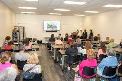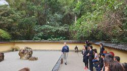
January 9th: They visited Jupiter High School, got their student IDs, met the teachers. They enjoyed a lecture from Ms. Jennifer Smith, an Environmental Scientist, and two other scientists from the South Florida Water Management District, learning about wildlife protection and business-community cooperation. And they had lunch with the lead teachers of the Jupiter Environmental Research and Field Studies Academy (JERFSA)and the principal of Jupiter High School. In the afternoon, they attended a lab class in a wetland ecosystem with JERFSA students and teachers.
1月9日：ジュピター高校登校初日。生徒証明書を受け取って校内に入り、先ずは図書館兼情報センターへと案内されました。そこで、南フロリダ水管理地区の環境専門家、ジェニファー・スミス氏からの講義を受け、野生生物保護に関しての官民の協力について学びました。ジュピター高校の校長先生と環境学コース（JERFSA）長をしている先生との合同主催の昼食会に招待していただきました。午後は環境コースの生徒と湿地の生態系と水質調査に関する実習授業に参加しました。
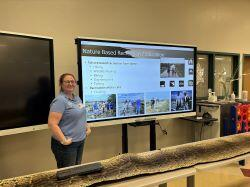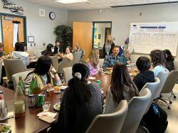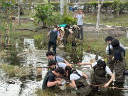
January 10th: They again went to Jupiter High School and had a tour of the expansive school campus. In the afternoon, they did presentations on Japanese nature and culture for the 11th and 12th-grade students of JERFSA.
1月10日：ジュピター高校登校２日目。午前中は広大な校舎を見学しました。午後は、JERFSAの11年生と12年生（日本の高校1年と2年に対応）向けに、日本の自然環境と文化についてプレゼンテーションを行いました。
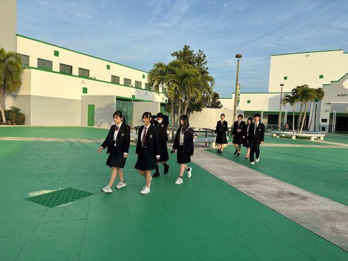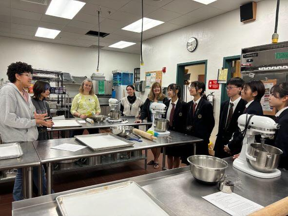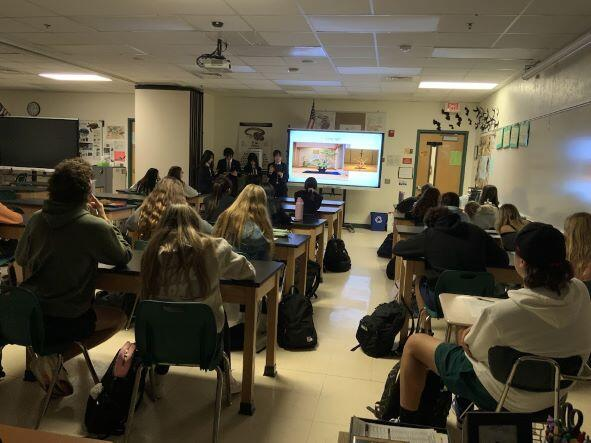
January 11th: They again went to Jupiter High School and attended classes with their homestay siblings.
1月11日：ジュピター高校登校3日目。ホストバディと一緒に様々な教科の授業に出席しました。
January 12th: The group traveled to Everglades National Park, a UNESCO World Heritage and Biosphere Reserve Site, to study native ecosystems and human impacts on them.
1月12日：ジュピター高校環境学コースの生徒と一緒に、ユネスコ世界自然遺産に指定されているエバーグレーズ国立公園および生物圏保護区のフィールドワークに参加しました。そこでの生態系にや在来種へ人間が与えている影響について学びました。
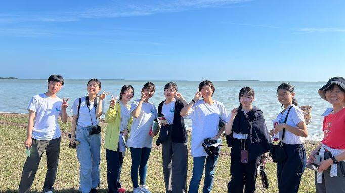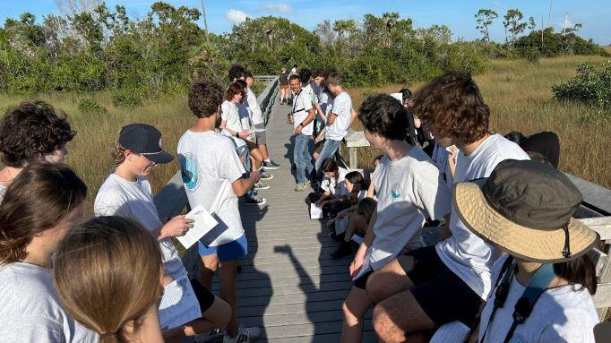
January 13th-15th: The weekend and the American holiday on Monday (Dr. Martin Luther King Jr. Day) were spent with the homestay families. The final event was an amazing farewell party with all the teachers and families. They had a great time!
1月13日～15日：この週末と月曜日（マーティン・ルーサー・キング・ジュニア・デーという祝日）は、ホストファミリーと一緒に過ごしました。希望者には、環境学の専門家によって地元の生態系についての観察ツアーが開催されました。最後は、この研修に参加したホストファミリーの方々が、フェアウェルパーティーを企画してくださいました。参加生徒たちはここでの経験を振り返りながら、ホストファミリーたちと素敵な時間を過ごしました。
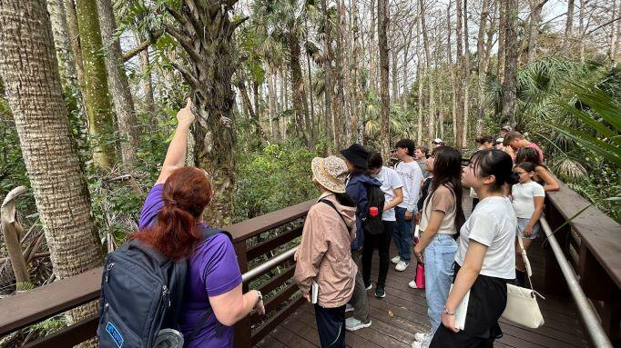
Cultural Exchange and Daily Life - 文化交流と日常生活
Throughout their stay, students lived with American families, gaining insights into the U.S. education system and daily life, enriching the cultural exchange experience.
滞在中、生徒たちはジュピター高校の生徒の家族と日常生活を共にし、様々な異文化体験を積むことができました。ジュピター高校に通うことで、米国の教育制度や教育内容についても理解を深めることができました。
Conclusion of the Trip - 帰国
On the morning of January 16th, the students departed for Kyoto, reflecting on their enriching and educational experience in Florida. Heartfelt thanks were extended to Jupiter High School's teachers, lecturers, and homestay families.
Post-Trip Activities and Achievements - 事後研修
Upon their return, the students prepared for a face-to-face presentation at Kyoto University, sharing the outcomes of their trip and proposing future initiatives for Japan and Kyoto. This event, held at the Laboratory of Regional Planning in the Graduate School of Global Environmental Studies (LRP-GES), was a success, with valuable feedback from professors and graduate students.
帰国後、生徒たちはこの研修を振り返り、自分たちの行動はどのように変容したかについてまとめ、京都大学大学院地球環境学堂地域資源計画論研究室の教授や大学院生にプレゼンテーションをしました。参加してくださった皆さんから多面的なフィードバックをいただき、学びをさらに進めることができました。
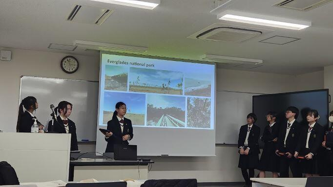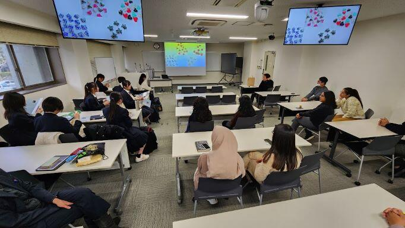
The Sagano High School students' global presentation is featured on the LRP-GES blog
この日の様子は京都大学大学院環境学堂地域資源計画論研究室のブログでも紹介されています。//lrp.ges.kyoto-u.ac.jp/archives/3739
Thanks to everyone involved with the Sagano High School Florida Program, 2024 was a successful year!
嵯峨野高校フロリダ短期研修を実施するにあたり、多方面から様々な御支援、御協力をいただきました。お陰様で貴重な学びと成長の機会を実現することができました。今回参加した生徒たちは、グローバルリーダーの一人として、周囲に良い影響を与え続けてくれると信じています。本当にありがとうございました。
2024年03月04日
2月7日(水)、GIの授業で京都の大学に通う留学生10名を招いて、1年生1～6組の生徒がインタビュー活動を行いました。参加クラスの国際交流委員がその様子をまとめてくれました。
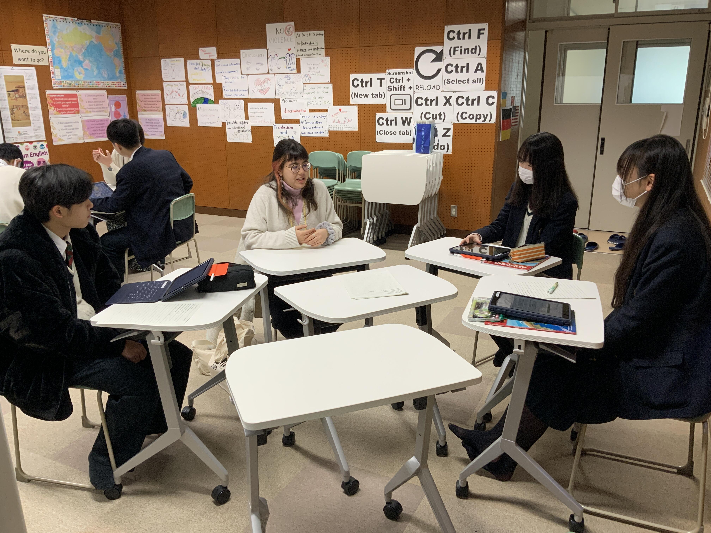
『私たちの班はアメリカ、そしてスウェーデンからの留学生にインタビューしました。「良い地球市民として生きるとは？」という問いに対し、「話し合いで意思疎通を図ることは、良い未来につながると思う」「他の言語を学び続けることは大事であると思う」などの回答がありました。個人的には、海外の方と実際に話せたことが楽しく、意見交流できたのもよかったです。実際に色々な考えに触れていくことは重要だと改めて考えることが出来ました。』
『将来のために、旅行に行くなどの様々な体験をしておくことが大切だと学びました。自分の狭い思い込みや価値観にこもらないで、視野を広げていきたいと感じました。』
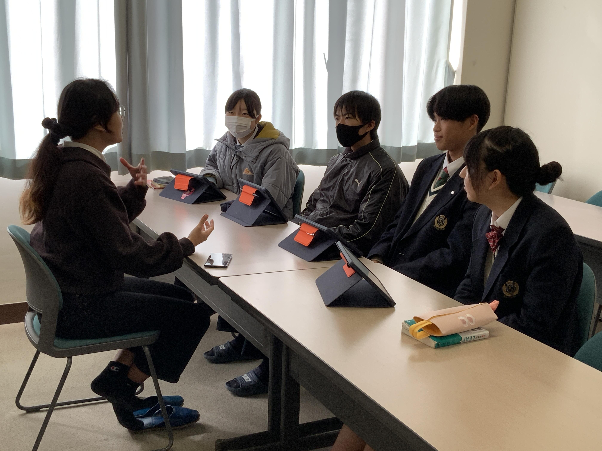
『モロッコ出身の医学研究者とスペイン出身の教師を目指している留学生にインタビューをしました。私は人生での大切な考え方や高校時代にしておくべきことなどを尋ねました。オープンマインドでいることが大切であると、2人とも同じおっしゃっておられて驚きました。日本に来て困ったことを尋ねた時に、二国間の時間の感覚の違いをあげておられました。日本は遅刻や遅延に厳しいですが、モロッコやスペインではもっと寛容であるそうです。自分自身の考えをもち、他の人の考えも受け入れてコミュニケーションをすることが重要であると知ることができました。』
2023年12月25日
12月13日(水)、1年2組の生徒がGI（グローバルインタラクション）の授業で、ハワイのJames Campbell High Schoolの生徒とオンライン交流を行いました。参加クラスの国際交流委員がその様子をまとめてくれました。
『嵯峨野高校の生徒は日本の文化を紹介するプレゼンテーションを行いました。私達のグループでは駄菓子について英語で説明しました。私たちのプレゼンに質問や感想を言ってくれて、会話が弾み、とても楽しい時間を共有できました。』
『ハワイの高校生は、好きな授業トップ3を紹介してくれました。嵯峨野高校と同じように、陶芸の授業があると聞いて、親近感を感じました。一番興味深かったのは、英語の授業についてです。アイデアを膨らませる方法を習う授業などがあると聞いて驚きました。』
『とても短い時間でしたが、楽しい時間を過ごせました。またこのような海外の高校生と交流する機会があれば、積極的に参加していきたいです。私たちの拙い英語もしっかり聞いてくれて、英語を話す勇気が持てました。このような勇気を積み重ねていって、自信を持って英語を話したいです。』
2023年12月22日
12月19日(火)、５月に開始した表題のプロジェクトの今年度最後の交流として、韓国の全羅南道から20名の高校生が嵯峨野高校に来校しました。歓迎式典の後、1年4組との交流授業を行い、放課後には本校でこのグローバル公民権プロジェクトに取り組んできた生徒と共に校内ツアーを実施しました。交流授業に参加したクラスの国際交流委員がその様子をまとめてくれました。
『日本の伝統的な遊びをみんなで楽しみました。私のグループでは百人一首の坊主めくりをしました。お互い初めは緊張していましたが、英語とジェスチャーでなんとかルールを伝え、全員で楽しく遊べました。お互いの自己紹介をして質問したり、韓国語を教えてもらったことがとてもおもしろかったです。』
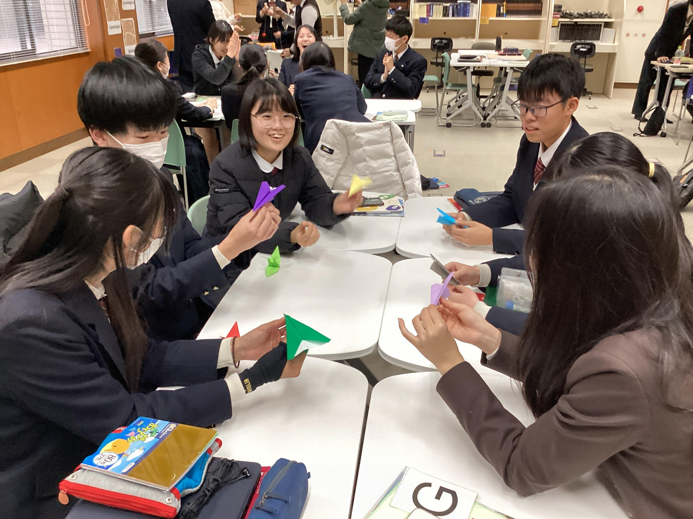
歓迎式典で記念品を贈呈
『今回の交流で私は自分たちがあまり日本以外の国のことを学べていないということを実感しました。韓国では英語も日本語も中学校で学ぶらしく、しかも交流した高校生はある程度日本についての知識を持っていました。もっと相手の国について下調べをしておく必要があると思いました。』
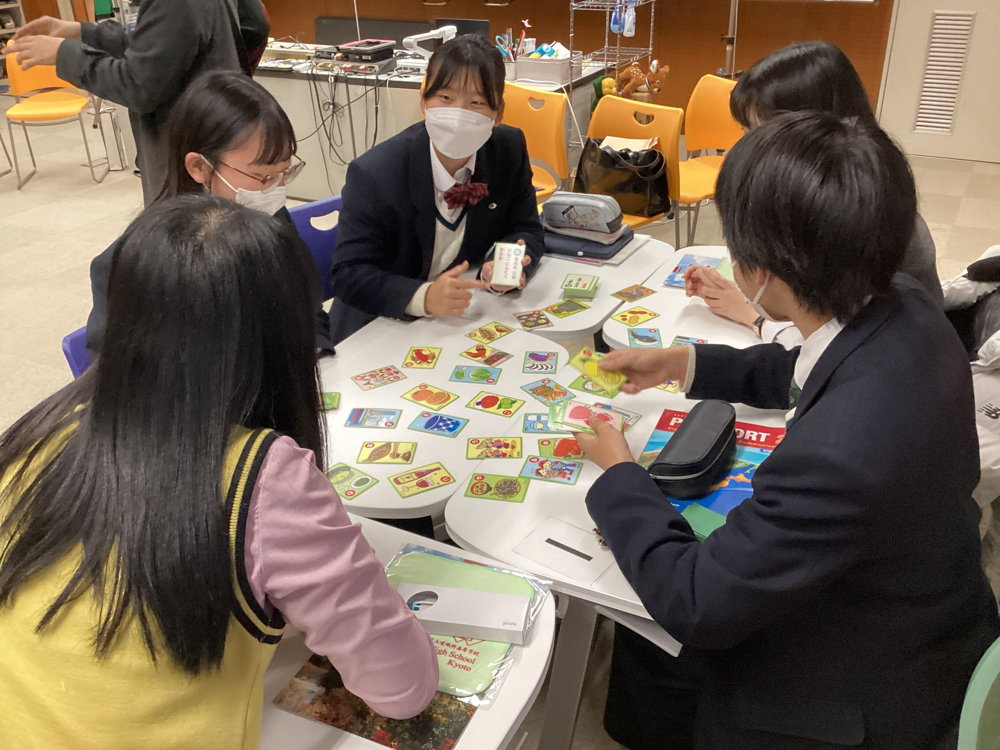
『韓国の生徒はとても親しみやすく話しやすかったので英語を使うのがとても楽しかったです。次もこのような交流があれば参加したいです。また、英語を使うことを恐れずに英語を使っていくことが大切だと思いました。』
2023年12月21日
12月12日および13日、1年生1・3・5・6組の生徒が、それぞれGI（グローバルインタラクション）の授業で韓国のテジョンジャンデ中等学校の生徒とオンラインで交流し、お互いの国の文化について紹介し合いました。該当クラスの国際交流委員がその様子をまとめてくれました。
『私たちは和食についてと京都の祭について紹介をし、韓国からは、学校のある韓国のテジョン市についての発表をしてくれました。自分たちが知らない韓国の一面を知れて、とても楽しかったです。また相手の生徒の方はとても英語が上手で、思わず「凄い」と思わされることもありました。もしまたこの様なイベントがあれば、ぜひ参加して、「生きた英語」を使う機会を増やしていきたいです。』
『お花見や、お月見などの日本の伝統文化を紹介している時に、韓国の生徒が反応しながらプレゼンを聞いてくれたのが嬉しかったです。』
『私たちは、回転寿司について発表し、私は、くら寿司について話しました。相手校の生徒は、韓国の有名人について話してくれました。特に韓国で人気のゲーマーの人など知らない人の話もあって興味深かく楽しかったです。交流を通して一番印象深かったのは、日本の駄菓子について話した時、「おいしい」と日本語で伝えてくれたことです。また今度、同じような交流があれば、私も相手の国の言葉であいさつなどをできるようになりたいと思います。』
『韓国の学生さんが三笘選手が好きだと言ってくれたことが嬉しかったです。』
『韓国で日本の文化は結構浸透しているんだと気づかされました。』
2023年12月13日
外務省...。お仕事の想像が難しいので略歴をご紹介させていただきます。
田中 宏明さん
2011年3月 京都府立嵯峨野高校卒業
2015年9月 京都大学法学部卒業
2016年4月 外務省入省
2016年5月 軍縮不拡散・科学部軍備管理軍縮課
（核軍縮に関する取組、オバマ大統領の広島訪問、NPT運用検討会議等の大型行事）
2018年4月 米国研修（デューク大学ロースクール留学）
2020年4月 ポーランド大使館二等書記官
（情報収集・働きかけ、対EU関係、ウクライナ情勢対応、大臣訪問対応）
2022年4月 中・東欧課（ウクライナ情勢対応）
2022年6月 南米課（南米１０カ国所掌、要人の訪問・来日の大型行事、国連総会等の国際会議）
...ますます遠い存在に感じます。田中先輩を前に最初はガチガチのみなさん。
しかし、ここから田中先輩のすごさを教員共々、思い知ることになるのです。
外務省に勤務するためには、語学や国際法等の知識ももちろん大切ですが、田中先輩はその知識を活かすためのコミュニケーション能力の大切さも教えてくださいました。大使館等海外の勤務地で、重要かつ正確な情報をいち早く入手するためには、様々な方との日頃からのコミュニケーションが大切であり、そのために人間関係のメンテナンスを意識的に行っておられるとのこと。


身振り手振りを交えて、熱くお話しいただいた結果、終盤には生徒のみなさんはこの表情！

外務省という難しいお仕事の紹介でしたが、信頼は安心に繋がるようで、笑顔の絶えない講演となりました。後輩へのメッセージとして、以下３つのことを教わりました。
・世界に目をむけよう。
・問題意識を持って、好奇心と情熱を胸に。
・「夢」を諦めないで、迷ったらワクワクする方へ。
講演後、心に火のついた様子の生徒が...

これからも嵯峨野高校は生徒の皆さんを通じて、教育で世界とつながっていきます。『迷ったらワクワクする方へ』飛び立て！嵯峨野高生！！
2023年12月08日
11月21日、1年3組の生徒がGI（グローバルインタラクション）の授業で、インドネシアにあるSMAN 1 Wonoayu高校の生徒とオンライン交流会を行いました。参加クラスの国際交流委員がその様子をまとめてくれました。
『私たちのクラスでは日本の食文化と日本の人気映画について紹介しました。そして、インドネシアの高校生はインドネシアの文化について紹介してくれました。インドネシアでは、ご飯は手を使って食べるということを知っていましたが、手でご飯を食べる方がよりおいしく感じるからという理由があるということを初めて知りました。交流を通じてインドネシアの文化や観光地などが知れたのが良かったです。』
『英語でコミュニケーションをとれると、様々なことを学び、知ることの出来る機会が増えるということを改めて実感しました。』
『異国の食べ物や建物について知れたので楽しかったです。またこんなイベントが開かれることを楽しみにしてます。』
2023年11月20日
10月16日（月）、2年生専修コースの生徒がサイエンス英語の授業で、立命館大学のノックソン先生から考古学の講義を受講しました！以下、その時の様子を英語でお伝えします。
The other day we had a special guest lecturer from Ritsumeikan University visit our Science English classes. Dr. Corey Noxon, an Assistant Professor, came and gave the students a lecture and a workshop on creating AR and VR models. Dr. Noxon uses AR and VR when researching Jomon Period archaeology. He explained how AR and VR helps researchers to study Japan's past, even when they live in countries all over the world. Then he showed the students how to use some of the AR tools and they created their own sample models. It was a lot of fun, and everyone had a new appreciation for how technology can help us to learn more about history!


2023年11月13日
11月1日(水)、１年生GI（グローバルインタラクション）の授業で韓国の釜山西女子高校と今年度3回目のオンライン交流をしました。


 We had our final interaction with our friends at Busan SEO Girls' School from South Korea. All of the students shared their presentations they had made in Global Interaction class with them. Then, the students from South Korea taught us more about their country. It was another great experience for us to learn about each other and have fun chatting.
We had our final interaction with our friends at Busan SEO Girls' School from South Korea. All of the students shared their presentations they had made in Global Interaction class with them. Then, the students from South Korea taught us more about their country. It was another great experience for us to learn about each other and have fun chatting.
本校生徒は日本の文化について、釜山西女子高校の生徒は韓国の文化についてそれぞれスライドプレゼンテーションをしました。その後自由にやりとりをして交流を楽しみました。
Some reflections from the students:
以下は生徒からの振り返りです。
"I explained about famous festivals in Kyoto such as Gion Festival and Jidai Festival. After our presentation ended, they also did a presentation about South Korea for me! They explained about the famous TV shows in South Korea. I didn't know about the culture there, but it was so interesting for me. Thanks to this, I could learn about the famous actors in South Korea."
"I think the most fun thing about this event was being able to know about their culture. I believe that understanding each other is very important in the globalized society now. So, I want to do things like this more!"
We had a great conversation, thanks to all of our international friends!
2023年11月09日
11月１日(水)、今年度４度目となる韓国のコクソン高校とのオンライン交流があり、国際交流委員７名が参加しました。前回に引き続き、環境問題をテーマにプレゼンテーションを行い、後半には自由交流で親睦を深めました。参加生徒がその様子をまとめてくれました。
『今回は私たち嵯峨野高校生が、グリーンウォッシングについてのスライドを作り発表しました。グリーンウォッシングとは、環境に良いことをしているように見せかけて企業のイメージアップを図ることです。その会社のホームページなどからはグリーンウォッシングかどうか分かりづらく調べるのが難しかったですが、日本の会社について知る良い機会となりました。』
『グリーンウォッシュかどうかを見極めるのは難しかったけれど、たくさん調べて新たな知識を身につけることができたし、コクソン高校の生徒さんにも知ってもらえてとてもいい機会になりました。』
『今回が最後の交流でしたが、今までの交流でコクソン高校の生徒と繋がりができ、韓国をより身近に感じることができるようになりました。毎回の交流で、お互いの好きなものやおすすめのもの、流行っているものなどについて聞き、仲を深めるのが楽しかったです。これからも色々な国の人との繋がりを作っていきたいです。』
『いつか対面で会って話したいです。』

2023年10月10日
9月27日(水)、１年生GI（グローバルインタラクション）の授業で韓国の釜山西女子高校とオンラインで交流をしました。参加クラスの国際交流委員がその様子をまとめてくれました。
『私たちは、嵯峨野高校についてのプレゼンを行いました。韓国の高校生は、K-popについてプレゼンをしてくれました。私は、あまり韓国のアイドルに詳しくなかったのですが、会話が弾み楽しかったです。特に、質問をし合い仲が深められたのが良かったです。その後、お互いの国の言語を教えあったことが面白かったです。英語でコミニケーションをとることは難しいですが、自分の世界が広がるので英語で話す機会をこれからも大切にしていきたいです。』
2023年09月27日
9月13日(水)、今年度３度目となる韓国のコクソン高校とのオンライン交流があり、国際交流委員７名が参加しました。前回に引き続き、環境問題をテーマに話し合いやプレゼンテーションを行いました。参加生徒がその様子をまとめてくれました。次回の交流は11月１日です。
『まず初めに夏休みの思い出や前回の交流で考えた、「地球温暖化を止めるために私たちにできること」に取り組めたかどうかなどを交流しました。その後、地球環境に配慮した商品を製造している会社についてコクソン高校生のプレゼンテーションを聞き、韓国の会社がどんな取り組みをして環境に配慮しているのかを知ることができました。交流の中では、日本にはない、海外のエコな取り組みについても知ることができ、日本でもできる環境を良くするための取組をもっと増やしたいと思いました。
次回は私たちが「グリーンウォッシュ」と呼ばれる、環境に配慮しているように見せかけて本当は配慮していない会社や、本当に環境に配慮している会社について調べ、コクソン高校の皆さんに向けてプレゼンテーションをする予定です。日本の会社はどのようにして環境に配慮しているのか、本当に環境に配慮できているとはどういうことかを考える良い機会にしたいです。』
『印象に残っているのは、韓国のYASEというシューズブランドのゼロチェルシーブーツという商品が、いらなくなったタイヤからできているということです。タイヤがブーツの材料になるとは思っていなかったので驚きました。』
『企業の中には、環境に配慮した取り組みを行っているように見えても、実際には他の部分でそれを超えるほどの環境に悪影響を及ぼす物質を排出してしまっていたりすることがあり、実際に貢献している企業を私たちが支援していくことが環境保全にもつながっていくのだと思った。』
『驚いたのは、紙ストローが環境に良いわけではないということです。環境にいいイメージがあっても、メリットやデメリットを考慮したうえで行動しないといけないと感じました。次はわたしたちが日本や世界の環境保護について伝えたいと思います。』
2023年09月15日

{kind=link}
{kind=link}
{kind=link}
{kind=link}
{kind=link}
{kind=link}
{kind=link}
{kind=link}
{kind=link}
{kind=link}
{kind=link}
{kind=link}
{kind=link}
７月中旬、１年生GIの授業でオーストラリアの Sydney Girls' School の６年生（現地の高校３年生）とオンラインで交流をしました。GIの授業で作成した嵯峨野高校紹介スライドを用いて頑張って英語で説明したり、日本語で質問を受けたりと楽しい時となりました。もっと英語を話せるように頑張ろう、と思った生徒も多いようでした。
参加生徒の感想です。「今回、自分たち嵯峨野高校生は英語で、シドニーの生徒は日本語でそれぞれ交流を行っていたので、主言語とは違う言語でコミュニケーションをとることの楽しさを味わうことができました。」
2023年09月15日
{kind=link}
{kind=link}
{kind=link}
{kind=link}
{kind=link}
{kind=link}
嵯峨野高校には相互交流で親交を深めている高校が国外にいくつかあります。シンガポールにも何校かあります。コロナ禍が落ち着きはじめ、久しぶりにシンガポールからの訪問客を受け入れることができようになりました。そして、爽やかな初夏にシンガポールにあるChung Cheng High School の副校長先生が嵯峨野高校を訪問してくださいました！それぞれの学校の取組やグローバル社会での共通課題などについて本校教員と交流した後、本校の授業見学もされました。グローバルインタラクションの授業では、シンガポールの教育について英語で講義をしてくださいました。スーパーサイエンスラボにおける生徒の取組にも大きな関心を寄せてくださり、将来的に協働でサイエンスプロジェクトを計画するお話もすることができました。楽しみです！
2023年09月15日
{kind=link}
{kind=link}
{kind=link}
{kind=link}
2年半前、コロナ禍で対面での国際交流が難しい時に、オンラインでの国際交流を嵯峨野高校に申し込んでくださったのが韓国の全羅南道にあるコクソン高校です。それ以来オンラインでの交流で親交を深めてきました。そのコクソン高校が、初めて嵯峨野高校を訪問してくださいました。少し前の話になりますが報告します。
訪問されたのは6月下旬でした。約80人の生徒が関西に修学旅行に訪れた際に、嵯峨野高校の訪問をプログラムに入れてくださったのでした。歓迎のセレモニーでコクソン高校の校長先生からご挨拶をいただいた後、若者の文化や伝統的な遊びといった話題を中心に、本校1年生の生徒とコクソン高校の生徒達は小グループに分かれて文化交流会を持ちました。参加した生徒は「伝えようと意識すると伝わるし、気持ちも通じ合えることがわかった。」「英語の文法などを気にして、話すのをためらうくらいなら、とりあえず話してみることが大切だと感じた。」という感想を寄せてくれました。韓国の同世代の生徒と交流できたことが嬉しかったようです。
2023年07月31日
7月19日(水)6限、1年3組の生徒がGIの授業を使ってシンガポールのYishun Town Secondary Schoolの生徒とオンライン交流をしました。Yishun Town Secondary Schoolは10年以上前から嵯峨野高校と交流のある学校です。参加クラスの国際交流委員が今回の様子をまとめてくれました。
{kind=link}
『嵯峨野高校についてのプレゼンテーションを行いました。シンガポールの高校生は、リアクションをとりながら私たちのプレゼンを聞いて質問をしてくれました。また、プレゼン終了後、互いに質問をし合い会話が弾んだのがよかったです。シンガポールの伝統的なご飯など、沢山のことを知ることができました。今回は、緊張して積極的に会話ができなかったのでまたこのような機会があれば積極的に会話できるようにしたいです。なかなか自分が言いたいことを全て英語にするのは難しいけれど諦めずに伝えることが大切だと学びました。』
{kind=link}
2023年07月31日
7月19日(水)、今年度2度目となる韓国のコクソン高校とのオンライン交流がありました。国際交流委員8名が参加し、【 Think Globally, Act Locally 】の考え方に基づいて、地球環境のために自分たちが日常で出来ることについて話し合いました。参加生徒がその様子をまとめてくれました。次回の交流は9月13日で、今回交流したアイデアの実践報告をする予定です。
{kind=link}
『今回は2回目の交流で、「地球をいろいろな問題から救うために、私たちは何ができるか」というテーマで話し合いました。特に地球温暖化を止めるために私たちができることについての意見が多く出ました。私のグループでは、コクソン高校の生徒さんに「フードロス」がなかなか伝わらず、英語での説明に苦労しました。伝わった時は嬉しかったです。世界共通の言葉だと思っていたので、伝わらなかった時は驚きました。日本だけでなく、世界のいろいろな国と繋がって、世界規模で地球の問題について考えることは、解決するためにとても重要なことだと思いました。』
{kind=link}
『私はエコバッグやマイボトルを持参すること、大きくなって着られなくなった服を他の人にあげることなどを提案しました。コクソン高校の生徒さんが提案していていいなと思ったことはシャワーの時間を減らすこと、使い捨てのスプーンを使わないことです。1回目の交流で仲良くなった生徒さんが私のことを覚えていてくれて嬉しかったし、その子も含めて様々な意見を聞くことができていい経験になりました。夏休み明けの交流が楽しみです。』
『韓国ではビニール袋は有料なのかどうかを聞いたところ、韓国では有料ではないらしく、国によって対策の仕方が異なるということが面白いと思った。次回も参加したい。』
{kind=link}
『私は、移動の際に車などを使う代わりに、自転車を使ったり歩いたりすれば、環境にも私たちの健康にも良い影響があるという意見を伝えました。コクソン高校の方は部屋に誰もいないのに電気がついていることがあるので、必要でない時は電気を消すなどして節電するべきだという意見を伝えてくれました。今回の交流で、地球のためにできることは国が違っても同じだと実感しました。祇園祭でマイボトルを持っていれば無料で水がもらえる活動がされていたことを伝えると驚いていて、話が盛り上がりました』
2023年07月13日
7月8日(土)サマーセミナーの1つであるEnglish Immersion Day が開催されました。1年生17名が参加し、朝8時30分から夕方まで英語漬けの一日を過ごしました。 English
{kind=link}
{kind=link}
午前中は３人ずつのグループに分かれ、府立高校のALT6名からのSpecial Lectureがありました。小グループに分かれたことで個々が英語を使用する場面が存分にあり、充実した時間を過ごすことができました。
{kind=link}
{kind=link}
午後からはImprov Live Performance (即興演技)に挑戦しました。与えられたtopicに対して即興で対応するという難易度の高い活動の中で、予想外の展開に何度も笑いが起こり和気藹々とした雰囲気で最後を締めくくりました。
{kind=link}
{kind=link}
使用言語は英語のみということで、最初は緊張した面持ちの生徒たちでしたが、ALTらの励ましを受けながら前向きに活動に取り組み、最後には満足した表情で1日を終えることができました。生徒たちにとって忘れられない日となったことと思います。
{kind=link}
{kind=link}
{kind=link}
{kind=link}
英語版記事はこちら
2023年07月13日
On Saturday, July 8th we held our annual Sagano Immersion Day for Summer Seminar. 17 first-year students took this opportunity to come close to natural, everyday English! Led by the AETs at Sagano High School, we were joined by four AETs from other high schools around Kyoto to enjoy a day filled with experiences using English throughout the day.
{kind=link}
{kind=link}
In the first half of the day, participating students enjoyed a variety of activities and lessons centered around English language or cultural experiences. It was packed full of fun and engaging activities which gave the students at Sagano a chance to really flex their English skills. They all worked hard to think critically and speak extemporaneously, and enjoyed meeting our guests from America and Canada.
{kind=link}
{kind=link}
In the afternoon, they practiced and performed improvisation activities to boost their extemporaneous production skills while enjoying cooperative performance activities with their friends. We are grateful for the AETs who joined us, and thankful for an enjoyable day using English!
{kind=link}
{kind=link}
{kind=link}
〒616-8226
京都市右京区常盤段ノ上町15番地
TEL 075-871-0723 FAX 075-871-0724
E-mail [email protected]
Copyright (C) 京都府立嵯峨野高等学校 All Rights Reserved.